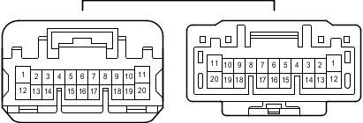

Наименование
Жгут проводов левой передней двери и жгут проводов панели приборов (боковая панель с левой стороны кожуха)
Код
KG2
Каталожный номер
90980-12741/90980-12740
Цвет
Белый
Технические характеристики

Расположение
Электропроводка в панели приборов (для моделей с левосторонним рулевым управлением) 2
Электропроводка в панели приборов (для моделей с правосторонним рулевым управлением) 2
Система
Система управления замками дверей
Система двойной блокировки (для моделей с левосторонним рулевым управлением)
Система двойной блокировки (для моделей с правосторонним рулевым управлением)
Иммобилайзер двигателя (для моделей с системой посадки и запуска)
Система посадки и запуска
Механизм открывания защелки стекла
Освещение салона
Электрические стеклоподъемники (для моделей с левосторонним рулевым управлением)
Электрические стеклоподъемники (для моделей с правосторонним рулевым управлением)
Зеркала с дистанционным управлением
Люк
Система запуска (для моделей с системой посадки и запуска)
Система блокировки рулевого управления (для моделей с системой посадки и запуска)
Противоугонная система
Система дистанционной блокировки дверей (для моделей с системой посадки и запуска)
Система дистанционной блокировки дверей (для моделей без системы посадки и запуска)